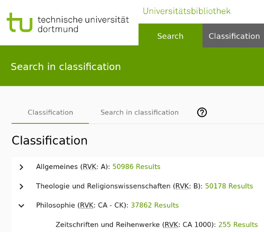

Elasticsearch-Konkordanz von Katalogs-IDs zu RVK auf Grundlage der Culturegraph Aggregatdaten
Pascal Christoph (dr0i)
Offene Infrastruktur, Hochschulbibliothekszentrum NRW (hbz)


KIM-Workshop, WWW, 05.05.2020
Diese Präsentation:
http://slides.lobid.org/kim-ws-2020-lightning-talk/

Zur Person
Angestellt am hbz, arbeite vor allem an lobid
Software-Entwickler, Maintainer von metafacture und jsonld-java
Fokus: Extraktion/Transformation/Laden von Metadaten
Agenda
- Was ist die RVK?
- Wozu eine RVK Anreicherung?
- Wie?
- Fazit / Ausblick
Was ist die RVK?
Die Regensburger Verbundklassifikation (RVK, auch Regensburger Systematik)
Gegliedert in Hauptgruppen und thematische Klassen, die durch eine Notation identifiziert sind (ähnlich Dewey Decimal Classification)
Z.B.: "AN 59100 Altertum"
CC0 lizensiert
Wozu RVK Anreicherung ?
Inhaltserschließung, z. B. virtuelle Aufstellungssystematik
Wie
Culturegraph stellt geclusterte Bestände der Verbünde (u.a. mit RVK) bereit
Dieses MARC21-XML filtern und zu ES-JSON-Bulk machen =>
{"index":{"_index":"cgrvk","_type":"rvk"}}
{"rvk":["CI 1100","5,1"],"hbzId":"HT018839495, HT018625006"}
...
... das per curl nach Elasticsearch indexieren
... Elasticsearch verwenden als Lookuptabelle